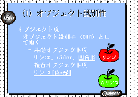

<html>
<head>
<title> Slide No.7 </title>
</head>

<frameset rows="430,130">

<noframes>
<body>
<a href="GIF/slide7.GIF"></a>

<a href="AU/voice7.au">
	</a>[274K]<p>
<!--		-->
オブジェクト指向プログラミング言語では、
データや知識を表現する時にオブジェクトを識別したり、
区別することは重要です。<p>

<b> Quixote </b> では、オブジェクト識別子の役割を持つ
<a href=""> オブジェクト項 </a> を用意しています。<p>

オブジェクト項には、２種類あります。
一つは、<a href=""> 基礎オブジェクト項 </a> と呼ばれ、
りんご、cider、四角形などのアトムです。
もう一つは <a href=""> 複合オブジェクト項 </a> で、
OHP の最後にあるような構造を持ちます。<p>

この複合オブジェクト項は、「青リンゴ」を表しています。
<p>
<!--		-->

<hr>
<a href="slide8.html" target="_top">次の OHP へ</a>
<br><br>
<a href="slide6.html" target="_top">前の OHP へ</a>
<br><br>
<a href="HomePage.html" target="_top">OHP の一覧へ</a>
</body>
</noframes>

<frame src="onlyslide7.html">
<frame src="buttonexpla7.html">

</frameset>

</html>
